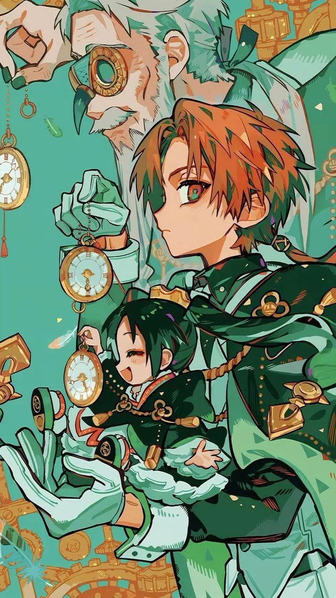
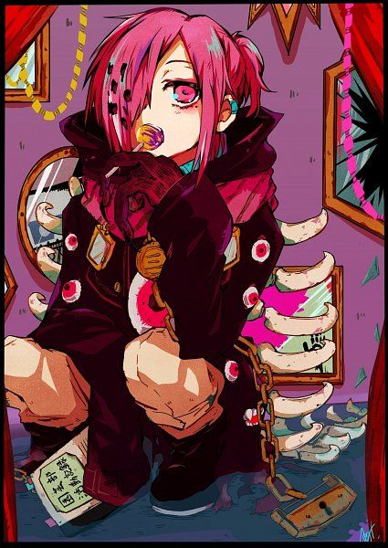
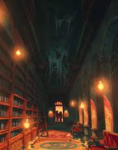
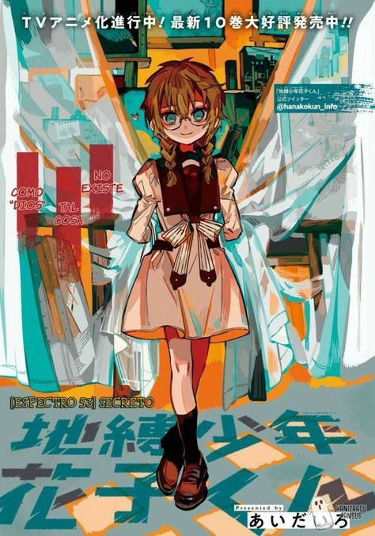
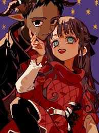
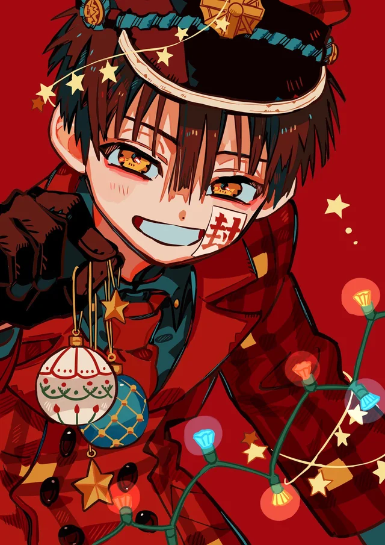
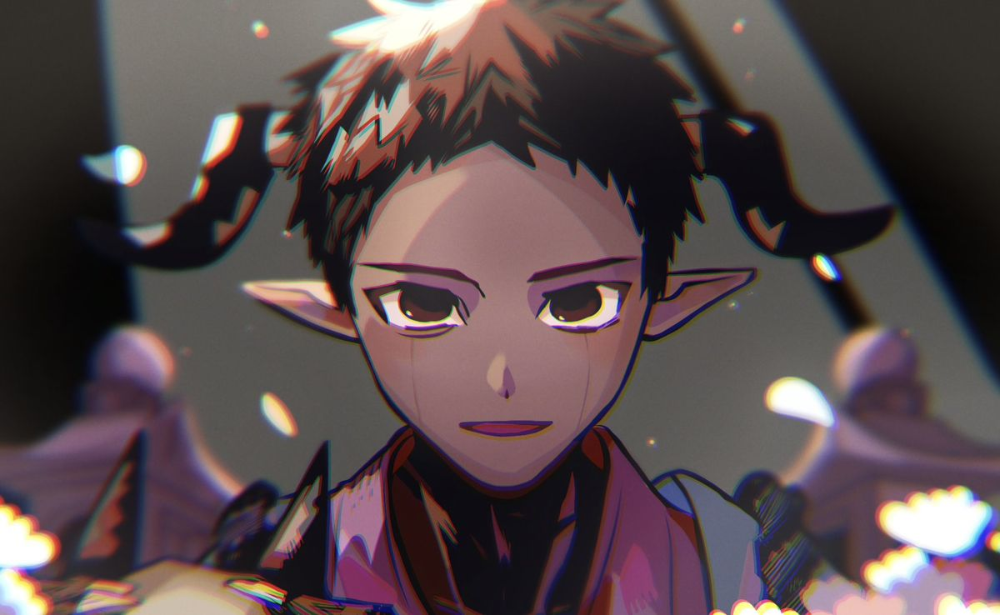
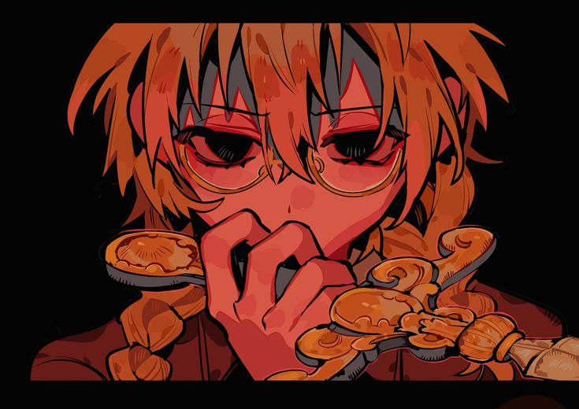
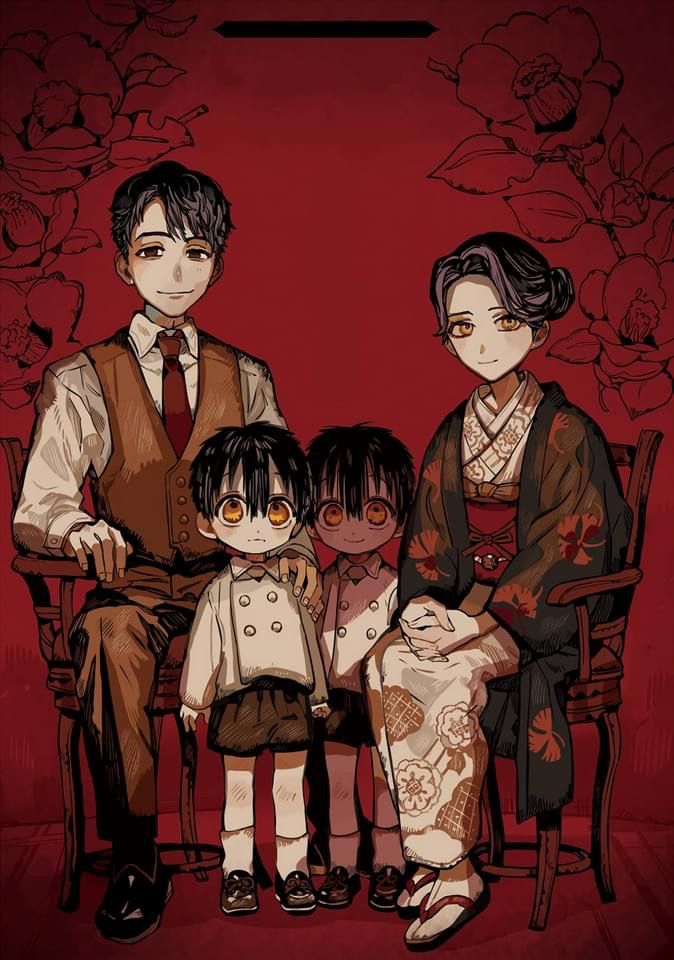

Oye, ¿sabes acerca de los Siete Misterios en esta escuela……?
En la Academia Kamome abundan los rumores sobre el más famoso
de los Siete Misterios.
Los 7 misterios

Los Guardianes del Reloj
Las Escaleras de Misaki

El Infierno de los Espejos

La Biblioteca de las 4 PM

El Pájaro de la Torre

El Shinigami

Hanako-san del Baño
Has Escuchado?
Dime, ¿lo sabes? El rumor más famoso entre los 7 misterios de esta escuela…

Has oido del shinigami ?
Como el Sexto Misterio, vigila la frontera más cercana a la Orilla Lejana (el mundo de los muertos).
Donde los niños tejen cestas toda la noche. Sumire Akane una joven fue ofrendada a el...

Has oido del shinigami ?
Shijima Mei, pobre atrtista con enfermedad terminal se encierra en su arte escapando de la
realidad esperando paciente lo inevitable...

Has oido de Hanako?
Se dice que perdio su heemano en su cumpleaños años despues regreso, pero ese no era su hermano
...
Que pasa con el resto de misterios?
Oh no...
Has escuchado?... Yahsiro ha destruido todos los yorishiros...
✕
oh no
Hanako a comenzado a desaparecer.
✕
oh no
Hanako a comenzado a desaparecer.
✕
oh no
Hanako a comenzado a desaparecer.
Yashiro cruzo la barrera
Para salvar a hanako, yashiro entro en el borde de la orilla lejana, donde los espectros pasan a su
mundo.